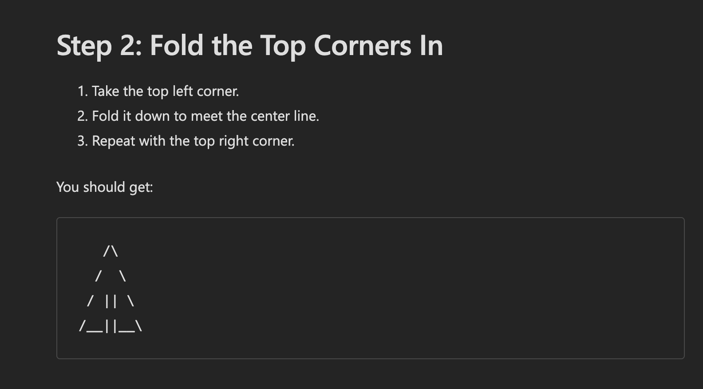
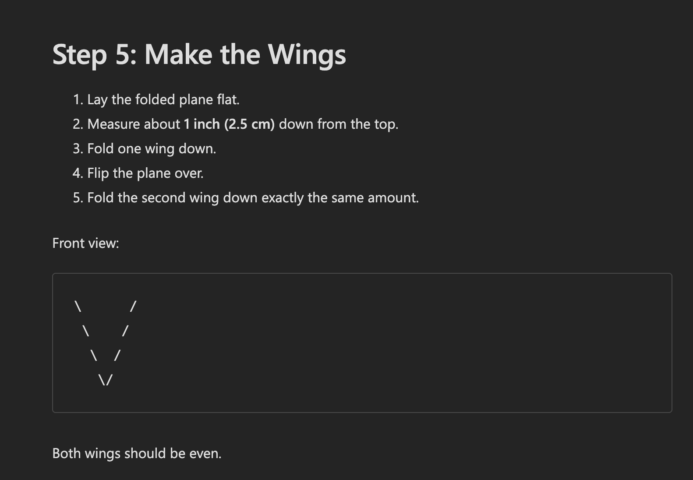
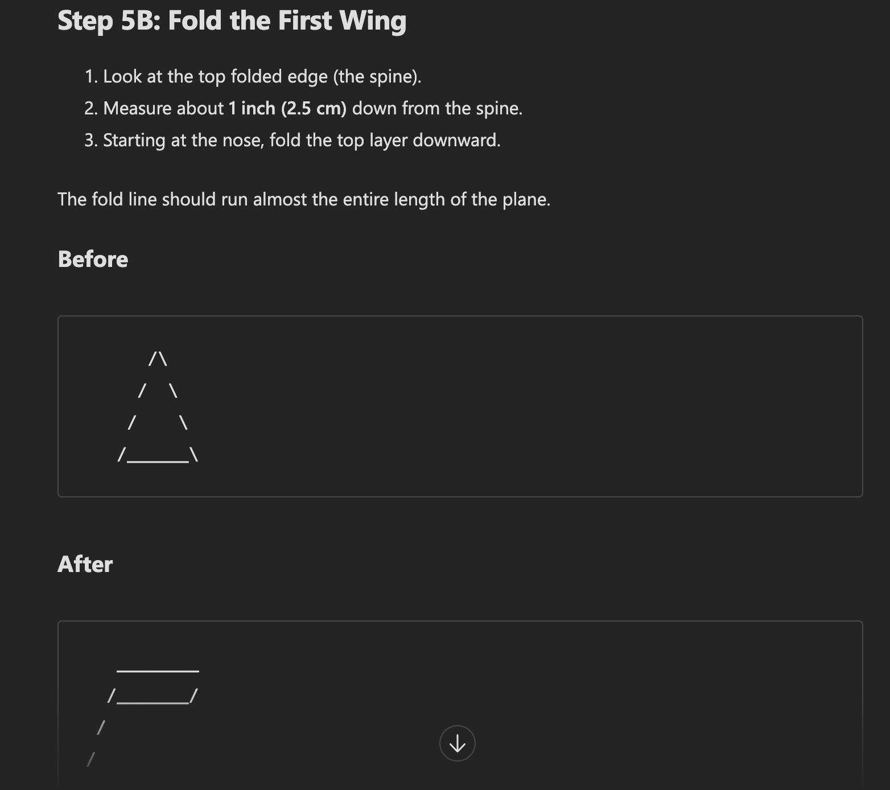

To make the paper airplane, I followed each step exactly described by Copilot. The AI not only generated the intructions but would also include ASCII art to help me visualize the steps. Along the way there were multiple occurrences where I would have to prompt the AI for clarification. The two images above are some examples of the instructions I received from Copilot. The third photo is an example of the clarification I recieved from Copilot.